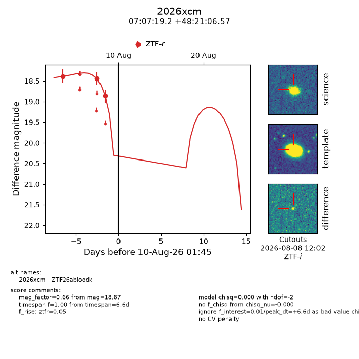
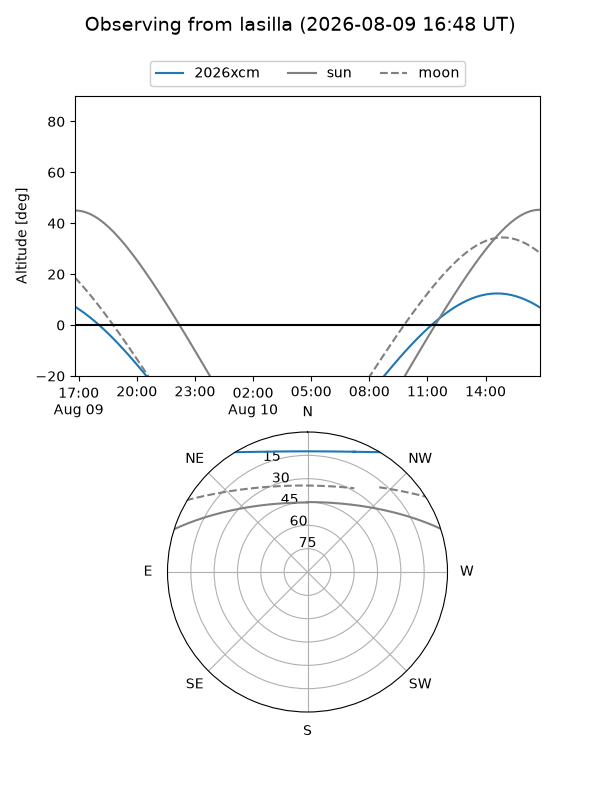
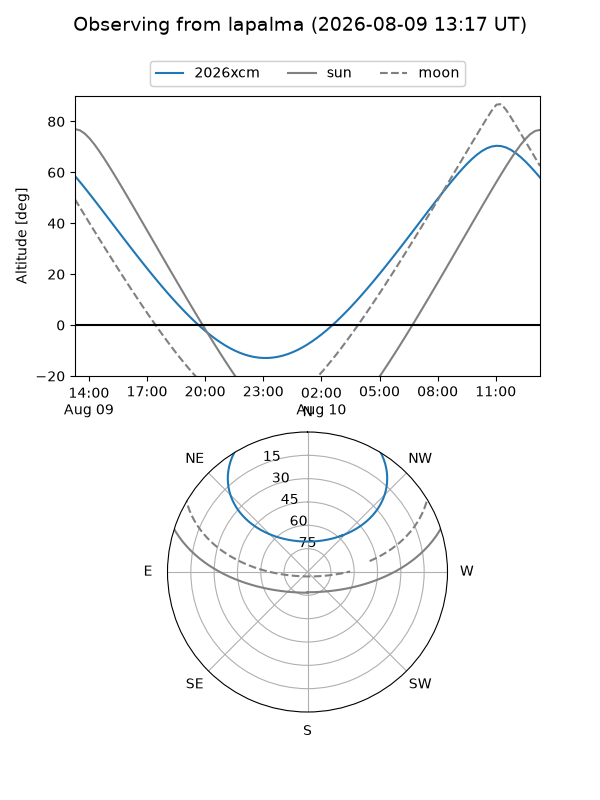
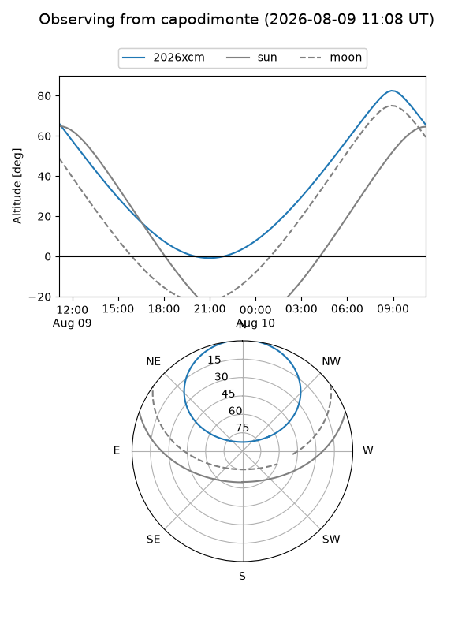
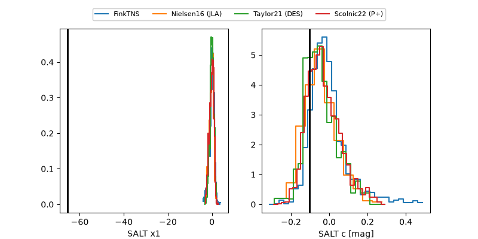

2026xcm
Target 2026xcm at 2026-08-10 13:47
Aliases and brokers:
FINK-ZTF: ztf.fink-portal.org/ZTF26abloodk
Lasair-ZTF: lasair-ztf.lsst.ac.uk/objects/ZTF26abloodk
ALeRCE-ZTF: alerce.online/object/ZTF26abloodk
YSE-PZ: ziggy.ucolick.org/yse/transient_detail/2026xcm
TNS name: wis-tns.org/object/2026xcm
Direct TNS query: direct search
alt names
ZTF26abloodk (ztf,fink_ztf)
2026xcm (tns,yse)
Coordinates:
equatorial (ra, dec) = 106.8301,+48.35183
equatorial (HMS+DMS) = 07:07:19.22,+48:21:06.57
galactic (l, b) = (168.7608,+22.43802)
Flags:
TNS type: nan
peak dt: +7.1
Photometry:
last ztfr=18.87
3 ztfr detections
Lightcurve

Visibility



Additional plots
